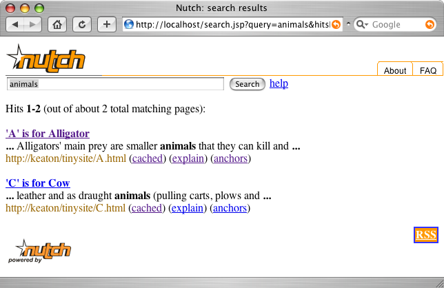
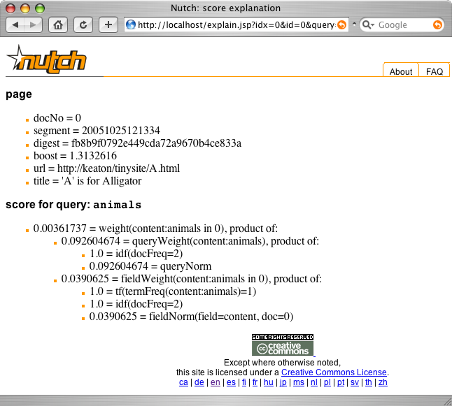

by Tom White
__/__/2005
In Part 1 of this two part series on Nutch, the open-source Java search engine, we looked at how to crawl websites. Recall that the Nutch crawler system produces three key data structures:
In this article we turn to searching. The Nutch search system uses the index and segments generated during the crawling process to answer users' search queries. We shall see how to get the Nutch search application up and running, and how to customise and extend it for integration into an existing website. We'll also look at how to re-crawl sites to keep your index up-to-date - a requirement of all real world search engines.
Without further ado, let's run a search using the results of the crawl we did last time. Tomcat seems to be the most popular servlet container for running Nutch, so let's assume you have it installed (although there is some guidance on the Nutch wiki for Resin). The first step is to install the Nutch webapp. There are some reported problems with running Nutch (version 0.7.1) as a non-root webapp, so it is currently safest to install it as the root webapp. This is what the Nutch tutorial advises. If Tomcat's webapps are in ~/tomcat/webapps/, then type the following in the directory where you unpacked Nutch:
rm -rf ~/tomcat/webapps/ROOT*
cp nutch*.war ~/tomcat/webapps/ROOT.war
The second step is to ensure that the webapp can find the index and segments that we generated last time. Nutch looks for these in the index and segments subdirectories of the directory defined in the searcher.dir property. The default value for searcher.dir is the current directory (.), which is where you started Tomcat. While this may be convenient during development, often you don't have so much control over the directory in which Tomcat starts up, or you want to be explicit about where the index and segments may be found. Recall from Part 1 that Nutch's configuration files are found in the conf subdirectory of the Nutch distribution. For the webapp these files can be found in WEB-INF/classes/. So we simply create a file called nutch-site.xml in this directory (of the unpacked webapp) and set searcher.dir to be the crawl directory containing the index and segments.
<?xml version="1.0"?>
<?xml-stylesheet type="text/xsl" href="nutch-conf.xsl"?>
<!-- Put site-specific property overrides in this file. -->
<nutch-conf>
<property>
<name>searcher.dir</name>
<value>/Users/tom/Applications/nutch-0.7.1/crawl-tinysite</value>
</property>
</nutch-conf>After restarting Tomcat, enter the URL of the root webapp in your browser (in this example I'm running Tomcat on port 80, but the default is port 8080) and you should see the Nutch home page. Do a search and you will get a page of search results like Figure 1.

Figure 1. Nutch search results for the query "animals".
The search results are displayed using the format used by all mainstream search engines these days. The explain and anchors links that are shown for each hit are unusual and deserve further comment.
Clicking the explain link for the page A hit brings up the page shown in Figure 2. It shows some metadata for the page hit (page A), and a score explanation. The score explanation is a Lucene feature that shows all the factors that contribute to the calculated score for a particular hit. The formula for score calculation is rather technical, so it is natural to ask why this page is promoted by Nutch when it is clearly unsuitable for the average user.
One of Nutch's key selling points is its transparency. Its ranking algorithms are open-source so anyone can see them. Nutch's ability to "explain" its rankings online - via the explain link - takes this one step further and allows an (expert) user to see why one particular hit ranked above another for a given search. In practice, this page is only really useful for diagnostic purposes for people running a Nutch search engine, so there is no need to expose it publicly, except perhaps for PR reasons.

Figure 2. Nutch's score explanation page for page A matching the query "animals".
The anchors page (not illustrated here) provides a list of the incoming anchor text for the pages that link to the page of interest. In this case, the link to page A from page B had the anchor text "A". Again, this is a feature for Nutch site maintainers rather than the average user of the site.
While the Nutch webapp is a great way to get started with search, most projects using Nutch require the search function to be more tightly integrated with their application. There are various ways to achieve this, depending on the application. The two ways we'll look at here are: using the Nutch API, and using the OpenSearch API
If your application is written in Java then it is worth considering using Nutch's API directly to add a search capability. Of course, the Nutch webapp is written using the Nutch API, so you may find it fruitful to use it as a starting point for your application. If you take this approach, the files to take a look at first are the JSPs in src/web/jsp in the Nutch distribution.
To demonstrate Nutch's API, we'll write a minimal command-line program to perform a search. We'll run the program using Nutch's launcher, so for the search we did above, for the term "animals", we type:
bin/nutch org.tiling.nutch.intro.SearchApp animalsAnd the output is as follows.
'A' is for Alligator (http://keaton/tinysite/A.html)
<b> ... </b>Alligators' main prey are smaller <b>animals</b> that they can kill and<b> ... </b>
'C' is for Cow (http://keaton/tinysite/C.html)
<b> ... </b>leather and as draught <b>animals</b> (pulling carts, plows and<b> ... </b>Here's the program that achieves this. To get it to run, the compiled class is packaged in a jar file, which is then placed in Nutch's lib directory. See the resources section to obtain the jar file.
package org.tiling.nutch.intro;
import java.io.IOException;
import org.apache.nutch.searcher.Hit;
import org.apache.nutch.searcher.HitDetails;
import org.apache.nutch.searcher.Hits;
import org.apache.nutch.searcher.NutchBean;
import org.apache.nutch.searcher.Query;
public class SearchApp {
private static final int NUM_HITS = 10;
public static void main(String[] args)
throws IOException {
if (args.length == 0) {
String usage = "Usage: SearchApp query";
System.err.println(usage);
System.exit(-1);
}
NutchBean bean = new NutchBean();
Query query = Query.parse(args[0]);
Hits hits = bean.search(query, NUM_HITS);
for (int i = 0; i < hits.getLength(); i++) {
Hit hit = hits.getHit(i);
HitDetails details = bean.getDetails(hit);
String title = details.getValue("title");
String url = details.getValue("url");
String summary =
bean.getSummary(details, query);
System.out.print(title);
System.out.print(" (");
System.out.print(url);
System.out.println(")");
System.out.println("\t" + summary);
}
}
}
Although it's a short and simple program, Nutch is doing lots of work for us, so we'll examine it in some detail. The central class here is NutchBean - it orchestrates the search for us. Indeed, the doc comment for NutchBean states that it provides "One stop shopping for search-related functionality".
Upon construction, the NutchBean object opens the index it is searching against in read-only mode, and reads the set of segment names and filesystem locations into memory. The index and segments locations are configured in the same way as they were for the webapp: via the searcher.dir property.
Before we can perform the search, we parse the query string given as the first parameter on the command line (args[0]) into a Nutch Query object. The Query.parse() method invokes Nutch's specialised parser (org.apache.nutch.analysis.NutchAnalysis) that is generated from a grammar using the JavaCC parser generator. Although Nutch relies heavily on Lucene for its text indexing, analysis and searching capabilities, there are many places where Nutch enhances or provides different implementations of core Lucene functions. This is the case for Query, so be careful not to confuse Lucene's org.apache.lucene.search.Query with Nutch's org.apache.nutch.searcher.Query. The types represent the same concept (a user's query), but they are not type compatible with one another.
With a Query object in hand we can now ask the bean to do the search for us. It does this by translating the Nutch Query into an optimized Lucene Query, then carrying out a regular Lucene search. Finally a Nutch Hits object is returned, which represents the top matches for the query. This object only contains index and document identifiers. To return useful information about each hit, we go back to the bean to get a HitDetails object for each hit we are interested in, which contains the data from the index. We retrieve only the title and URL fields here, but there are more fields available: the field names may be found using the getField(int i) method of HitDetails.
The last piece of information that is displayed by the application is a short HTML summary which shows the context of the query terms in each matching document. The summary is constructed by the bean's getSummary() method. The HitDetails argument is used to find the segment and document number for retrieving the document's parsed text, which is then processed to find the first occurrence of any of the terms in the Query argument. Note that the amount of context to show in the summary - that is, the number of terms before and after the matching query terms - and the maximum summary length are both Nutch configuration properties (searcher.summary.context and searcher.summary.length, respectively).
That's the end of the example, but you may not be surprised to learn that
NutchBean provides access to more of the data stored in the segments, such as cached content and fetch date. Take a look at the API documentation for more details.
OpenSearch is an extension of RSS 2.0 for publishing search engine results, and was developed by A9.com, the search engine owned by Amazon.com. Nutch supports OpenSearch 1.0 out of the box. The OpenSearch results for the search in Figure 1 can be accessed by clicking on the RSS link in the bottom right-hand corner of the page. This is the XML that is returned:
<?xml version="1.0" encoding="UTF-8"?>
<rss version="2.0"
xmlns:nutch="http://www.nutch.org/opensearchrss/1.0/"
xmlns:opensearch="http://a9.com/-/spec/opensearchrss/1.0/">
<channel>
<title>Nutch: animals</title>
<description>Nutch search results for query: animals</description>
<link>http://localhost/search.jsp?query=animals&start=0&hitsPerDup=2&hitsPerPage=10</link>
<opensearch:totalResults>2</opensearch:totalResults>
<opensearch:startIndex>0</opensearch:startIndex>
<opensearch:itemsPerPage>10</opensearch:itemsPerPage>
<nutch:query>animals</nutch:query>
<item>
<title>'A' is for Alligator</title>
<description><b> ... </b>Alligators'
main prey are smaller <b>animals</b>
that they can kill and<b> ... </b></description>
<link>http://keaton/tinysite/A.html</link>
<nutch:site>keaton</nutch:site>
<nutch:cache>http://localhost/cached.jsp?idx=0&id=0</nutch:cache>
<nutch:explain>http://localhost/explain.jsp?idx=0&id=0&query=animals</nutch:explain>
<nutch:docNo>0</nutch:docNo>
<nutch:segment>20051025121334</nutch:segment>
<nutch:digest>fb8b9f0792e449cda72a9670b4ce833a</nutch:digest>
<nutch:boost>1.3132616</nutch:boost>
</item>
<item>
<title>'C' is for Cow</title>
<description><b> ... </b>leather
and as draught <b>animals</b>
(pulling carts, plows and<b> ... </b></description>
<link>http://keaton/tinysite/C.html</link>
<nutch:site>keaton</nutch:site>
<nutch:cache>http://localhost/cached.jsp?idx=0&id=2</nutch:cache>
<nutch:explain>http://localhost/explain.jsp?idx=0&id=2&query=animals</nutch:explain>
<nutch:docNo>1</nutch:docNo>
<nutch:segment>20051025121339</nutch:segment>
<nutch:digest>be7e0a5c7ad9d98dd3a518838afd5276</nutch:digest>
<nutch:boost>1.3132616</nutch:boost>
</item>
</channel>
</rss>
This document is an RSS 2.0 document, where each hit is represented by an item element. Notice the two extra namespaces, opensearch and nutch, which allow search-specific data to be included in the RSS document. For example, the opensearch:totalResults element tells you the number of search results available (not just those returned in this page). Nutch too defines its own extensions, allowing consumers of this document to access page metadata, or related resources, such as the cached content of a page via the URL in the nutch:cache element.
Using OpenSearch to integrate Nutch is a great fit if your front-end application is not written in Java. For example, you could write a PHP front-end to Nutch by writing a PHP search page that calls the OpenSearch servlet then parses the RSS response and displays the results.
The examples we have looked at so far have been very simple in order to demonstrate the concepts behind Nutch. In a real Nutch setup other considerations come into play. One of the most frequently asked questions on the Nutch newsgroups concerns keeping the index up-to-date. The rest of this article looks at how to re-crawl pages to keep your search results fresh and relevant.
Unfortunately, re-crawling is not as simple as re-running the crawl tool that we saw in Part 1. Recall that this tool creates a pristine WebDB each time it is run, and starts compiling lists of URLs to fetch from a small set of seed URLs. A re-crawl starts with the WebDB structure from the previous crawl and constructs the fetchlist from there. This is generally a good idea as most sites have a relatively static URL scheme. It is however possible to filter out the transient portions of a site's URL space that should not be crawled by editing the conf/regex-urlfilter.txt configuration file. Don't be confused by the similarity between conf/crawl-urlfilter.txt and conf/regex-urlfilter.txt: while they both have the same syntax, the former is used only by the crawl tool, and the latter by all other tools.
The re-crawl amounts to running the generate/fetch/update cycle, followed by index creation.
To accomplish this we employ the lower-level Nutch tools that the crawl tool delegates to. Here is a simple shell script to do it, with the tool names highlighted:
#!/bin/bash
# A simple script to run a Nutch re-crawl
if [ -n "$1" ]
then
crawl_dir=$1
else
echo "Usage: recrawl crawl_dir [depth] [adddays]"
exit 1
fi
if [ -n "$2" ]
then
depth=$2
else
depth=5
fi
if [ -n "$3" ]
then
adddays=$3
else
adddays=0
fi
webdb_dir=$crawl_dir/db
segments_dir=$crawl_dir/segments
index_dir=$crawl_dir/index
# The generate/fetch/update cycle
for ((i=1; i <= depth ; i++))
do
bin/nutch generate $webdb_dir $segments_dir -adddays $adddays
segment=`ls -d $segments_dir/* | tail -1`
bin/nutch fetch $segment
bin/nutch updatedb $webdb_dir $segment
done
# Update segments
mkdir tmp
bin/nutch updatesegs $webdb_dir $segments_dir tmp
rm -R tmp
# Index segments
for segment in `ls -d $segments_dir/* | tail -$depth`
do
bin/nutch index $segment
done
# De-duplicate indexes
# "bogus" argument is ignored but needed due to
# a bug in the number of args expected
bin/nutch dedup $segments_dir bogus
# Merge indexes
ls -d $segments_dir/* | xargs bin/nutch merge $index_dir
To re-crawl the toy site we crawled in Part 1, we would run:
./recrawl crawl-tinysite 3
The script is practically identical to the crawl tool except it doesn't create a new WebDB or inject it with seed URLs.
Like crawl the script takes an optional second argument (depth), which controls the number of iterations of the generate/fetch/update cycle to run (default five). Here we have specified a depth of three. This allows us to pick up new links that may have been created since the last crawl.
The script supports a third argument (adddays), which is useful for forcing pages to be retrieved even if they are not yet due to be re-fetched. The page re-fetch interval in Nutch is controlled by the configuration property db.default.fetch.interval, and defaults to 30 days. The adddays arguments can be used to advance the clock for fetchlist generation (but not for calculating the next fetch time), thereby fetching pages early.
Even with the re-crawl script we have a problem with updating the live search index. As mentioned above, the NutchBean class opens the index to search when it is initialized. Since the Nutch webapp caches the NutchBean in the application servlet context, updates to the index will never be picked up as long as the servlet container is running.
This problem is recognized by the Nutch community, so it will likely be fixed in an upcoming release (Nutch 0.7.1 was the stable release at the time of writing). Until Nutch provides a way to do it, you can work around the problem - possibly the simplest way is to re-load the Nutch webapp after the re-crawl completes. More sophisticated ways of solving the problem are discussed on the newsgroups. These typically involve modifying NutchBean and the search JSP to pick up changes to the index.
In this two-article series we introduced Nutch and discovered how to crawl a small collection of websites and run a Nutch search engine using the results of the crawl. We covered the basics of Nutch, but there are many other aspects to explore, such as the numerous plugins available to customise your setup, the tools for maintaining the search index (type bin/nutch to get a list), or even whole-web crawling and searching. Possibly the best thing about Nutch though, is its vibrant user and developer community, which is continually coming up with new ideas and ways to do all things search-related.
This article is for my elder daughter Emilia.